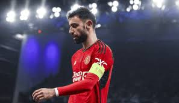

Blog Post Lists
Bruno Fernandes sends important message to Ten Hag after exit from Manchester United !
Following Manchester United’s slow start to the 2024-25 Premier League season and failure to qualify for the UEFA Champions League, the club’s executives made the decision to part ways with Erik ten Hag. Two weeks after his departure, team captain Bruno Fernandes broke his silence, sharing his thoughts on the exit of the Dutch coach.
Ten Hag was brought to United with a vision to rebuild the squad and had entrusted Fernandes with the captain’s armband, passing over players like Harry Maguire and Marcus Rashford. Reflecting on this, Fernandes expressed his gratitude in an interview with Sky Sports and addressed the team’s role in Ten Hag’s exit. “Whenever you see a manager go you have to take some of the blame on yourself, it is because the team is not doing so well,” Bruno stated. It is easier to get rid of a manager than 15 players. I spoke to the manager (Ten Hag) and apologized to him, I was disappointed he has gone and I tried to help him. I wasn’t scoring goals, we are not scoring goals and I feel responsible,” the captain added.
What does Neymar's future hold? Santos president gives update on whether Al-Nassr superstar could return

As Santos prepares for the upcoming 2025 season, there is intense speculation about the possible return of one of Brazil’s most beloved stars—Neymar. While Neymar’s ongoing challenges in the Saudi Pro League at Al-Hilal raise doubts about his future, Santos President Marcelo Teixeira recently hinted at the potential for Neymar to come back to his roots. This has fueled excitement and mystery surrounding whether Santos will pursue a plan to bring the forward back home. Currently, the Peixe is navigating through significant roster changes and financial adjustments, including preliminary talks with former Santos player Gabigol. Although Neymar’s return is surrounded by mystery, Teixeira’s words have certainly kept fans on edge about what 2025 may hold.
The Brazilian’s recent time at Al-Hilal has been fraught with setbacks. The 32-year-old forward moved from Paris Saint-Germain to Saudi Arabia in the summer of 2023, but the journey has been far from smooth. Not long after his arrival, he suffered a severe ACL injury while playing for Brazil, an injury that sidelined him for nearly a year. Though he briefly returned to the field this season, he soon suffered another setback, this time facing another four-to-six-week hiatus due to injury.
Xabi Alonso will leave Bayer Leverkusen this summer: What will be his next destination?

According to Eurosport, Xabi Alonso will leave Bayer Leverkusen at the end of the current season, despite his contract running until 2026. The report suggests Alonso’s next destination is likely Real Madrid, although Carlo Ancelotti still has 18 months remaining on his contract. The possibility of Alonso returning to Germany with Bayern Munich remains, however, particularly if Vincent Kompany underperforms this season. The report indicates that Alonso has already informed several Leverkusen players of his intention to depart at the end of the season. This decision may depend on Ancelotti’s continued tenure at Real Madrid.
Premier League giants eye Rodrygo: €150M reportedly on the table for Real Madrid star
Rodrygo Goes remains a highly sought-after player in the Premier League. Liverpool has shown the most significant interest, actively pursuing the 23-year-old Brazilian forward. However, they’re not alone; Manchester City is now making a strong push to acquire his services.
According to Sport, Pep Guardiola‘s City has been monitoring Rodrygo for some time. Previously, the presence of established attacking players made a move unlikely. However, uncertainty surrounding Erling Haaland‘s future has prompted City to explore potential replacements. Haaland’s impact on Guardiola’s tactics means a change could necessitate a significant shift in strategy.
City is prepared to make a substantial offer for Rodrygo. Real Madrid is considering a €150 million bid for the Brazilian.
More Recommended Stories: